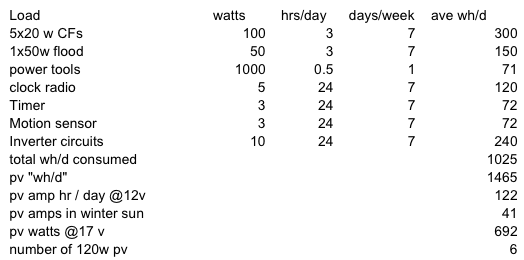
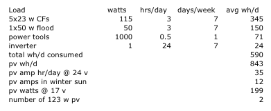

System Sizing
The system size grew each time I changed the design but the point of this page is to demonstrate the process by which I determined my system size. The first step I took was to do a Load List Analysis. This consisted of writing down every possible load on the system(Load), the wattage for each load(watts), the number of hours in a day that the load would be active(hrs/day), and the days per week the load would be used(days/week).

The watts multiplied by the hrs/day multiplied by the days/week and divided by seven days total gave the average watt hours per day(ave wh/d). The total wh/d consumed is 1025 Whrs/day.
The next row, pv "wh/d", takes into account the inefficiency of solar panels. Most panels are reputed to be about 80% efficient but just in case, I used an efficiency of 70%: 1025 divided by 0.70 = 1465 Whrs/day.
The next row, pv amp hr/day @ 12V, is the total pv wh/d divided by 12V yielding 122 Ahrs/day. This number reflects the number of amp hours the proposed system would use daily.
The next row, pv amps in winter sun, assumes three noon-hours for winter. Dividing 122 Ahrs/day by 3 gives 41 Ahrs. A noon hour is defined as an hour of full power production from a solar panel. Doug Livingston provided me with the numbers for my area: 7 noon-hours/day during the summer and 3 noon-hours/day during the winter.
Using the nominal voltage of photovoltaic panels, the pv watts @ 17V is 17 x 41 = 692 Whrs.
Using 120 watt solar panels, the number of 120w pv panels needed is 692 / 120 = 6.
In this design, the Timer and Motion Sensor were to run all the time and functioned as a way of turning the inverter on and off. In the final design, the inverter goes into a power-saving mode called search mode where it slowly searches for an AC load. In search mode, our inverter uses less than 1 watt which eliminated the need for the separate sensor and timer.
Every step of the way, our design errors on the side of caution. The final system calculations are noted below.

Running through the calculations using a 24 volt system and the smaller number of loads gives the two 123 watt solar panels.
Battery Sizing
Notice the total wh/d consumed is 590. The efficiency of the inverter I used is 90%. So 590 / 0.90 = 655 Watt hrs/day to produce the required 590 Watt hrs/day consumed by the system. For the 24 volt system, 590 / 24 = 27.3 Amp hrs/day. Using deep cycle batteries, the less I use of the battery each time, the longer they will last. I used four 6 volt 220 amp hour batteries in series creating 220 amp hours at 24 volts. The percentage of the battery bank used in one day is 27.3 / 220 = 12.4%. This is an extremely low use of the batteries. However, this system is off grid so if there is a three day long rain storm which is not at all uncommon for the area, then the batteries would be drained to 3 x 12.4 = 37.2%. This is still okay for deep cycle batteries.
All bases are covered... in theory.
|